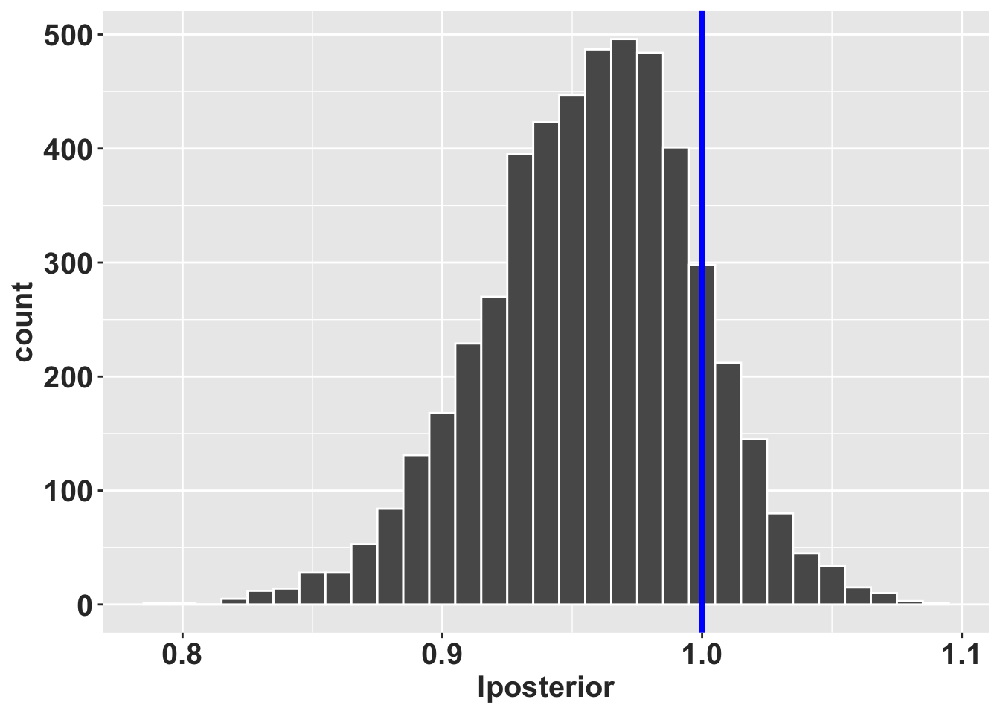

Capítulo 8 Método bayesiano de calcular las transciones y fecundidades
Por: Raymond L. Tremblay
El objetivo de este capítulo es demostrar algunos de los retos cuando uno trabaja con especies raras o con especies que tiene tamaño de muestra limitada o transiciones poco frecuente. Se demostrará como tomar encenta los análisis cuando hay poca información para estimar los parámetros de la matrices y como se puede resolver y estimar parámetros para que sean más realista. Considera este primer ejemplo donde se estima que la especie de interés tenga tres etapas en su ciclo de vida (semillas, plántulas y adultos) y que solamente la etapa más grande (de adultos) puede producir semillas. Cuando se comienza un análisis de dinámica poblacional el primer paso es evaluar y tratar de ver cual son las etapas del ciclo de vida que pudiesen ser representativo de la dinámica principal de la especie y que sea realista cuando se considera el ciclo de vida de la especies y práctico en la recolección de datos.
En esta primera figura vemos lo que se considera que ocurre en esa especie hipotética. Ahora se recoge los datos del campo y evalúa las transiciones y fecundidad y tiene información siguiente.
- Todas las semilla germinan y crece a la etapa de plántula.
- Es realista que todas las semillas germinan?
- Por que no se encontró semillas que NO germinan?
- Todos las plántulas mueren antes de llegar a la etapa de adulto.
- Es realista que todas las plántulas se muere dentro del ciclo de vida de una especies?
Aquí se ve dos de los problemas que resulta en MPM que no son realista, uno que no hay ninguna mortandad o que todo se muere. El otro componente es el efecto del tamaño de muestra, considera que su especie de interés usted tuvo acceso solamente a 4 plantas adultas (un especies rara), y 4 de los 4 sobrevivieron, por consecuencia 100% de supervivencia. Si los individuos llegan a esta etapa son inmortales!!!? Claramente es un resultado del tamaño de muestra y no del ciclo de vida de la especie. Es por pura probabilidades que no se encontró una planta que se muere.
Es importante reconocer la diferencia entre los valores recolectado y la historia de vida típica de una especies. Uno podría usar los datos que 100% de los individuos sobreviven pero eso es realista a largo plazo?
El paquete raretrans ayuda en resolver estos asuntos ilógicos y crear matrices que son más realistas al considerar el ciclo de vida típica de la especie estudiada.
Aquí un ciclo de vida que no es biologícamente realista
- todas las semilla sobreviven y pasan a plántulas
- ninguna plántula sobrevive y/o pasa a ser adultos
- los adultos 90% se quedan como adulto pero ninguno produce semillas
NOTA que es posible que los datos que recolectan del campo sean estos, pero muchas veces esas observaciones son un resultado de la falta de tamaño de muestra.
# hidden code to produce figures
library(DiagrammeR)
library(Rage)
matA <- rbind(
c(0.0, 0.0, 0.0),
c(1.0, 0.0, 0.0),
c(0.0, 0.0, 0.9)
)
stages <- c("semillas", "plantulas", "adultos")
title <- NULLConsidera este siguiente ejemplo:
- Si se estudia los arboles Sequioa y muestra los arboles grandes (con un dbh de > xxx), aunque muestra 1000+ individuos de esa etapa/tamaño es posible que no encontrará ninguno que muere entre un año y otro. Por consecuencia el estimado de supervivencia de esos arboles es 100%. Aunque uno sabe que si hubiese muestreado 10,000 o 100,000 arboles se podría haber detectado uno o más individuos que fallece. En adición la mortandad en planta es frecuentamente relacionado con el tamaño, más grande menos le probabilidad de fallecer. La mortandad en estos tipo de individuos puede ser dependiente del tiempo, donde hay variación biotica o abiotica que aumenta la mortandad pero son eventos raros. Por consecuencia, la mortandad en estos individuos es rara pero no es 0. Es importante considerar la biología de la especie y el tamaño de muestra cuando se analiza los datos.
8.1 El paquete “raretrans”
El manuscrito Tyre, Raymond, and Perez (2024) con la información original del uso del paquete se encuentra aquí https://doi.org/10.1016/j.ecolmodel.2021.109526.
Population projections from holey matrices: Using prior information to estimate rare transition events
Abstracto
Las matrices de proyección de población son un medio común para predecir la persistencia de la población a corto y largo plazo para especies raras, amenazadas y en peligro de extinción. Los datos de tales especies pueden sufrir de tamaños de muestra pequeños y, en consecuencia, perder eventos demográficos raros que dan como resultado trayectorias de ciclo de vida incompletas o biológicamente poco realistas. Las matrices con valores faltantes (ceros; p. ej., sin observación de semillas que se transforman en plántulas) a menudo se substituye utilizando información de la literatura, otras poblaciones, períodos de tiempo, otras especies, estimaciones de las mejores conjeturas o, a veces, incluso se ignoran. Para paliar este problema, proponemos usar un modelo multinomial de Dirichlet para parametrizar las transiciones y un Gamma para los estimados de reproducción para substituir los valores faltantes en estas matrices perforadas. Esto integra formalmente la información previa dentro de un marco bayesiano e incluye explícitamente el peso de la información previa en las distribuciones posteriores. Mostramos utilizando dos conjuntos de datos reales que el peso asignado a la información anterior influye principalmente en la dispersión de los posteriores, la inclusión de anteriores da como resultado matrices irreducibles y ergódicas, y se pueden hacer inferencias biológicamente más realistas sobre las probabilidades de transición. Debido a que las previas se establecen explícitamente, los resultados son reproducibles y se pueden volver a evaluar si hay previas alternas disponibles en el futuro.
8.3 Instalación de raretrans #2
Para instalar raretrans remover el # antes de correr el script para tener aceco a los codigos de raretrans.
#library(devtools)
devtools::install_github("atyre2/raretrans", build = TRUE, build_opts = c("--no-resave-data", "--no-manual"))## Skipping install of 'raretrans' from a github remote, the SHA1 (3cbc441c) has not changed since last install.
## Use `force = TRUE` to force installationVea el siguiente enlace para más información en ingles, la información que sigue es una traducción y ampliación de la información del enlace.
https://atyre2.github.io/raretrans/articles/onepopperiod.html
library(tidyverse)
library(ggplot2)
library(popbio) # para la función projection.matrix()
library(raretrans)
# Mi tema de formato de las gráficas de ggplot2 personal
rlt_theme <- theme(axis.title.y = element_text(colour="grey20",size=15,face="bold"),
axis.text.x = element_text(colour="grey20",size=15, face="bold"),
axis.text.y = element_text(colour="grey20",size=15,face="bold"),
axis.title.x = element_text(colour="grey20",size=15,face="bold"))El objetivo de esta viñeta es demostrar el uso del paquete raretrans para los cálculos de los parámetros en una población y periodo de transición.
8.4 Obtención de la matriz de proyección
raretrans asume que la matriz de proyección es una lista de dos matrices, una matriz de transición y una matriz de fertilidad. Este es el formato de salida de popbio::projection.matrix. Si tenemos transiciones individuales en un marco de datos, podemos usar raretrans::get_state_vector para obtener el número inicial de individuos por etapa.
Podemos utilizar popbio::projection.matrix para obtener los datos necesarios. Hacemos una demostración con los datos de transición y fertilidad de la orquídea epifita Lepanthes elto POPNUM 250 en el periodo 5. Lepanthes eltoroensis es endémica de Puerto Rico, epifita y limitada a una pequeña región de la isla.
8.5 Paso 1: Cargar y fusionar los datos de población única para L. elto
data("L_elto") # carga el conjunto de datos `L_elto` en la memoria de la computadora (los datos están incluido en el paquete `raretrans`)
head(L_elto) ## # A tibble: 6 × 13
## POPNUM year seedlings adults fertility IND_NUM stage next_stage first_year
## <dbl> <dbl> <dbl> <dbl> <dbl> <dbl> <chr> <chr> <dbl>
## 1 209 1 1 6 0 67 j j 1
## 2 209 1 1 6 0 68 a a 1
## 3 209 1 1 6 0 69 a a 1
## 4 209 1 1 6 0 70 a a 1
## 5 209 1 1 6 0 71 j a 1
## 6 209 1 1 6 0 72 a a 1
## # ℹ 4 more variables: last_year <dbl>, recruited <lgl>, died <dbl>,
## # lifespan <int>8.6 Organización de los datos en el “data.frame”
- el primer paso es seleccionar los datos de una población y un periodo de tiempo.
- el segundo paso es hacer un cambio en la terminología para el estado más pequeño de “plantula” a “seedling”… Ese cambio es para que la información presentada aquí sea la misma que en el documento en ingles.
Cada fila de este data.frame de datos tiene columnas para la fase actual (stage, periodo t), la fase siguiente (next_stage, periodo t+1) y la fertilidad por individuo. Tenga en cuenta que “p” significa “plántula” en español. El primer conjunto de líneas de abajo cambia el nombre de la etapa del ciclo vital de “p” a “s” después de seleccionar la población y el periodo de tiempo.
onepop <- L_elto %>%
filter(POPNUM == 250, year == 5) %>% # Filtrar la población # 250, el periodo (año=year) 5
mutate(stage = case_when(stage == "p" ~ "s",
TRUE ~ stage),
next_stage = case_when(next_stage == "p"~ "s",
TRUE ~ next_stage)) # redefine "p" por plantula a "s" para seedling
# popbio::projection.matrix no funciona con el formato *tibbles*, por consecuencia se convierte en data.frame
head(onepop) # AHora tenemos solamente datos de la población #250 del periodo 5## # A tibble: 6 × 13
## POPNUM year seedlings adults fertility IND_NUM stage next_stage first_year
## <dbl> <dbl> <dbl> <dbl> <dbl> <dbl> <chr> <chr> <dbl>
## 1 250 5 8 34 0 167 j a 1
## 2 250 5 8 34 0 168 j a 1
## 3 250 5 8 34 0 169 j a 1
## 4 250 5 8 34 0.118 170 a a 1
## 5 250 5 8 34 0 172 j j 1
## 6 250 5 8 34 0 173 j a 1
## # ℹ 4 more variables: last_year <dbl>, recruited <lgl>, died <dbl>,
## # lifespan <int># Crear TF = TRUE, añadir para formatear corectamente.
TF <- popbio::projection.matrix(as.data.frame(onepop),
stage = stage, fate = next_stage,
fertility="fertility", sort=c("s","j","a"), TF = TRUE)
TF # Este es la estructura de etapas de vida para esa población. Nota que tenemos dos matrices, una de transiciones **T** y otra de fertilidad **F**. ## $T
##
## s j a
## s 0.09090909 0.00000000 0.00000000
## j 0.63636364 0.57446809 0.00000000
## a 0.00000000 0.29787234 0.85294118
##
## $F
##
## s j a
## s 0.0000000 0.0000000 0.1176471
## j 0.0000000 0.0000000 0.0000000
## a 0.0000000 0.0000000 0.00000008.7 Nota:
Nuestros estadios se codifican ahora como s (plántula), j (juvenil) y a (adulto), y ahora tenemos dos matrices: T (transición de estadios) y F (fecundidad). La tasa de crecimiento asintótica de la población observada es \(\lambda =\) 0.93. Las transiciones raras que faltan en nuestra primera matriz de transición, TF$T, son la transición de plántula (s) a adulto (a) y la transición de j a
s. Pero sabemos que ocurren.
8.8 Paso 2: Obtener el número inicial de individuos por etapa
Dado que nuestras recuentos (número de individuos, N) y el tamaño de muestreo equivalente a priori se expresa como múltiplo del número de individuos observados, necesitamos obtener el número de individuos en cada etapa (\(N\)) en el primer periodo de tiempo.
Utilizamos la función raretrans::get_state_vector() para obtener el recuento inicial de individuos, N. Se observa que la cantidad de individuos inciales por etapa es el número de individuos en el primer muestreo es muy limitada, con 11 plántulas, 47 juveniles y 34 adultos.
N <- get_state_vector(onepop, stage = stage, sort=c("s","j","a"))
N # Un vector # de individuos iniciales para cada etapa, nota que la cantidad por etapa, "stage", son los individuos en el primer muestreo## [1] 11 47 348.9 Metodo alterno de calcular las transiciones, fecundidades y el número de individuos por etapas
La lista de matrices y el vector de cuento de individuales no tienen por qué proceder de un data.frame como hemos hecho aquí. Mientras tengan el formato esperado, pueden crearse a mano. Usamos la población 231 en el periodo 2 como ejemplo, dividiendo la matriz en submatrices de transición T y fecundidad F. Abajo, m significa “muerte”, es decir, plantas que están muertas. Nota aquí que las transiciones están estimada de tamaño de muestra todavía más pequeña con solamente 2 plántulas, 6 juveniles y 16 adultos. Ni una de las 2 plántulas crecieron a ser juveniles por consecuencia su transición es de cero. En adición una plántulas falleció, entonces 50%, si hubiese muerto los dos seria 100% mortandad, y si hubiese sobrevivido los dos 100% se quedan como plántulas. No hay valores intermedios!!!
## $Tmat
## stage
## fate p j a
## p 0.5000000 0.0000000 0.0000000
## j 0.0000000 0.8333333 0.0000000
## a 0.0000000 0.0625000 0.8750000
##
## $Fmat
## [,1] [,2] [,3]
## [1,] 0 0 0.125
## [2,] 0 0 0.000
## [3,] 0 0 0.000## p j a
## 2 6 16¿Como se ve el ciclo de vida de esa población en ese periodo?
En esta matriz falta la transición de plántula a juvenil, y ninguno de los 6 juveniles murió, lo que lleva a una sobre estimación de la supervivencia. La tasa de crecimiento asimtótico de la población observada es \(\lambda =\) 0.88. La matriz no es ergódica (no se puede llegar a cualquier otro estado desde uno o más estados), y es reducible, lo que significa que una o más columnas y filas se pueden descartar y tienen las mismas propiedades eigen.
stages2 <- c("plantulas", "juveniles", "adultos")
title <- NULL
plot_life_cycle(Tmat, stages=stages2)Lo que vimos anteriormente fue algunos de los problemas reales que uno encuentra cuando se usa datos de campo, y hay tamaño de muestra pequeña o transiciones raras.
8.10 Uso de priors para incorporar transiciones raras
8.10.1 Use priors no informativos
- Ese paso es solamente para entender porque no se calcula y porque no se usa prior uniforme. Si entiende el concepto de valores apriori y posteriori puede saltar este paso y ir a la sección de Añadiendo realidad a los análisis. Tremblay (R. L. Tremblay et al. (2021)) muestran que los valores de prior de una dirichlet funciona para las columnas de la matriz de transición (T) y que valores prior gamma funciona para las columnas de la matriz de transición (F).
8.10.2 Matriz de transición
Por lo tanto, vamos a añadir un dirichlet uniforme con prior con un peso = \(1\) a la matriz de transición, \(T\). Aquí, tenemos 4 destinos (3 + muerte), por lo que cada destino 0,25 a la matriz de destinos observados (¡no a la matriz de transiciones!) de transición). Cuando especificamos una matriz con de valores apriori para las transiciones, hay una fila más que columnas. Esta fila extra representa la muerte.
NOta que el prior uniforme no es recomendado, pero se usa aquí para demostrar el concepto. Un prior uniforme probablemente no toma en cuenta el ciclo de vida correcta de la especie. Por ejemplo que las plántulas pueden pasar adulto un ese periodo de tiempo?, Es posible que un adulto puede regresar a ser plántula?
Tprior <- matrix(0.25, byrow = TRUE, ncol = 3, nrow=4)
fill_transitions(TF, N, P = Tprior) # resultado de la matriz de transición básica## [,1] [,2] [,3]
## [1,] 0.10416667 0.005208333 0.007142857
## [2,] 0.60416667 0.567708333 0.007142857
## [3,] 0.02083333 0.296875000 0.835714286# Para entender las diferencias del impacto de las matriz compara los resultados con *$T* del objeto *TF*
TF## $T
##
## s j a
## s 0.09090909 0.00000000 0.00000000
## j 0.63636364 0.57446809 0.00000000
## a 0.00000000 0.29787234 0.85294118
##
## $F
##
## s j a
## s 0.0000000 0.0000000 0.1176471
## j 0.0000000 0.0000000 0.0000000
## a 0.0000000 0.0000000 0.00000008.10.3 Como calcular a mano!
Podemos obtener el mismo resultado ‘a mano’ - necesitamos el vector de observaciones porque la posterior se calcula a partir de las observaciones de transiciones, no la matriz de transiciones.
Tobs <- sweep(TF$T, 2, N, "*") # obtener las observaciones de transiciones
Tobs <- rbind(Tobs, N - colSums(Tobs)) # añadir la fila de muerte
Tobs <- Tobs + 0.25 # añadir los valores a priori
sweep(Tobs, 2, colSums(Tobs), "/")[-4,] # dividir por la suma de la columna y descarta la fila de muerte ## s j a
## s 0.10416667 0.005208333 0.007142857
## j 0.60416667 0.567708333 0.007142857
## a 0.02083333 0.296875000 0.835714286El prior uniforme rellena las transiciones que faltan, pero también crea problemas porque proporciona valores de transición que son biológicamente imposibles. Por ejemplo, proporciona una transición para adulto->plántula, cuando esta transición sólo es posible en la matriz de fecundidad \(F\). Por esta razón, no recomendamos el uso de priores uniformes. En otra palabra usando un prior uniforme no toma en cuenta el ciclo de vida de una especie.
8.10.4 Matriz de fecundidad
Debemos especificar los parámetros para la fertilidad a priori como una matriz. Las etapas que no hay reproducción o sea que no se producen por reproducción deben ser NA, usando NA_real_. El concepto de NA_real_ es que es un valor que no esta presente pero con puntos decimales. Nota que el valor a priori de la fertilidad es 0.0001.
alpha <- matrix(c(NA_real_, NA_real_, 1e-5,
NA_real_, NA_real_, NA_real_,
NA_real_, NA_real_, NA_real_), nrow=3, ncol = 3, byrow = TRUE)
beta <- matrix(c(NA_real_, NA_real_, 1e-5,
NA_real_, NA_real_, NA_real_,
NA_real_, NA_real_, NA_real_), nrow=3, ncol = 3, byrow = TRUE)
fill_fertility(TF, N, alpha = alpha, beta = beta)##
## s j a
## s 0.0000000 0.0000000 0.1176473
## j 0.0000000 0.0000000 0.0000000
## a 0.0000000 0.0000000 0.0000000El cambio en la fertilidad es < 0,0001 en comparación con el valor observado.
8.10.5 Calculando los valores a priori de fertilidad a mano
Métodos a mano, alfa a priori es el número de crías observadas y beta a priori es el número de adultos observados.
obs_offspring <- N[3]*TF$F[1,3]
prior_alpha <- 1e-05
prior_beta <- 1e-05
posterior_alpha <- obs_offspring + prior_alpha
posterior_beta <- N[3] + prior_beta
posterior_alpha / posterior_beta # valores esperados de la fertilidad## [1] 0.1176473Esto demuestra por qué la estimación puntual posterior de la fecundidad no cambia mucho; los valores no informativos de \(\alpha\) y \(\beta\) apenas cambian los valores observados.
Ahora podemos juntar todos los valores a priori. NOTA que todavía no se recomienda usar un prior uniforme.
unif <- list(T = fill_transitions(TF, N),
F = fill_fertility(TF, N,
alpha = alpha,
beta = beta))
unif## $T
## [,1] [,2] [,3]
## [1,] 0.10416667 0.005208333 0.007142857
## [2,] 0.60416667 0.567708333 0.007142857
## [3,] 0.02083333 0.296875000 0.835714286
##
## $F
##
## s j a
## s 0.0000000 0.0000000 0.1176473
## j 0.0000000 0.0000000 0.0000000
## a 0.0000000 0.0000000 0.00000008.11 El crecimiento poblacional
La tasa de crecimiento asintótico de la población es ahora \(\lambda =\) 0.92. La tasa de crecimiento se reduce ligeramente porque la aplicación de la prioridad uniforme a las probabilidades de transición hace que las transiciones observadas de crecimiento y supervivencia se reduzcan ligeramente en relación con las transiciones no observadas de crecimiento y supervivencia.
8.11.1 Otras opciones para el argumento `returnType
Por defecto, fill_transitions() devuelve la matriz de transición \(T\), y fill_fertility() devuelve la matriz de fertilidad \(F\). Existen otros tres otros valores que puede tomar el argumento returnType:
fill_transitions(... returnType = "TN")puede devolver una matriz aumentada de destinos, que es útil para la simulación. La cuarta fila de este resultado (véase más adelante) es el estado de mortalidad.
## [,1] [,2] [,3]
## [1,] 1.25 0.25 0.25
## [2,] 7.25 27.25 0.25
## [3,] 0.25 14.25 29.25
## [4,] 3.25 6.25 5.25fill_fertility(... returnType = "ab")devuelve los vectores alfa y beta de los vectores posteriores.
## $alpha
##
## s j a
## s 4.00001
## j
## a
##
## $beta
## [,1] [,2] [,3]
## [1,] NA NA 34.00001
## [2,] NA NA NA
## [3,] NA NA NA- Ambas funciones también pueden devolver la matriz completa, la suma de \(T\) y \(F\).
##
## s j a
## s 0.104166667 0.005208333 0.124789916
## j 0.604166667 0.567708333 0.007142857
## a 0.020833333 0.296875000 0.8357142868.12 Añadiendo realidad a los análisis
Hasta este punto, el objetivo era de entender las funciones y su aplicaciones. Ahora vamos a añadir realidad a los análisis. Como se ha mencionado no deberíamos usar valores a priori uniforme. Debemos usar valores que son más relevante al ciclo de vida de la especie de interés.
8.12.1 Incorporar priores informativos
Para solucionar el problema de la creación de transiciones imposibles, especificamos una prioridad más informativa obtenida de un experto en orquídeas epifitas de Lepanthes (RLT). La información tiene que tener la misma forma que la matriz de transiciones con una fila más que columnas. Esa ultima fila representa los individuos que se mueren de la etapa correspondiente. Estos valores deberían ser recolectado ANTES de recolectar los datos de campo, para no sesgar los resultados.
RLT_Tprior <- matrix(c(0.25, 0.025, 0.0,
0.05, 0.9, 0.025,
0.01, 0.025, 0.95,
0.69, 0.05, 0.025),
byrow = TRUE, nrow = 4, ncol = 3)Nota la matriz tiene la 1ª fila, 3ª columna es 0,0, porque esta transición es imposible. Esta prioridad se construye de manera que las columnas suman 1, lo que crea la mayor flexibilidad para la ponderación de los valores **a priori. Por defecto, la suma es 1, interpretado como un tamaño de muestra a priori* de 1.
A hora usando la función de fill_transitions donde uno añade los valores del campo TF, el tamaño de muestra en el tiempo 1 N, el la matriz de valores *a priori informativa, se calcula la matriz de transición posteriori. Compara TF** con esta matriz para ver los cambios.
## [,1] [,2] [,3]
## [1,] 0.1041666667 0.0005208333 0.0000000000
## [2,] 0.5875000000 0.5812500000 0.0007142857
## [3,] 0.0008333333 0.2921875000 0.85571428578.12.2 MOdificar el peso de los valores a priori
Podemos especificar el peso de los valores a priori modificando el tamaño de muestra de cada etapa. Nota que si uno tiene poca confianza en los valores a priori se le da un valor pequeño para que los datos del campo dominan los resultados.
## [,1] [,2] [,3]
## [1,] 0.143939394 0.008333333 0.000000000
## [2,] 0.440909091 0.682978723 0.008333333
## [3,] 0.003333333 0.206914894 0.885294118En este caso, la prioridad se pondera con la mitad del número observado de transiciones. En este caso, con sólo 2 transiciones, el tamaño efectivo de la muestra a priori sigue siendo 1. Si el número de transiciones observadas fuera mayor, una ponderación a priori de 0,5N sería mayor que 1, pero permitiría que los datos dominen.
8.13 Intervalos de Confianza de los parámetros
Obtener los intervalos de confianza (IC) para cada entradas de la matriz
La distribución posterior marginal de un elemento en un multinomio es una distribución beta, y usamos esto para obtener intervalos creíbles en nuestro tasas de transición. Podemos usar el tipo de retorno TN para obtener los parámetros de el multinomio deseado.
Esas son las estimaciones puntuales (comparar con la primera columna anterior), inferior y superior \(95\%\) de los intervalos creíbles simétricos para transiciones de la etapa de plántula. Existe un alto grado de incertidumbre debido a la tamaño de muestra pequeño (\(2\)) y bajo peso en el anterior (\(1\)), lo que lleva a un tamaño de muestra efectivo de 3.
TN <- fill_transitions(TF, N, P = RLT_Tprior, priorweight = 0.1, returnType = "TN")
a <- TN[,1] # cambie 1 a 2, 3 etc para obtener la distribución beta marginal de cada columna.
b <- sum(TN[,1]) - TN[,1]# cambie 1 a 2, 3 etc para obtener la distribución beta marginal de cada columna.
p <- a / (a + b)
lcl <- qbeta(0.025, a, b) # el valor 0.025 de la distribución beta
ucl <- qbeta(0.975, a, b) # el valor 0.975 de la distribución beta
knitr::kable(sprintf("%.3f (%.3f, %.3f)", p, lcl, ucl))| x |
|---|
| 0.105 (0.006, 0.321) |
| 0.583 (0.309, 0.831) |
| 0.001 (0.000, 0.005) |
| 0.311 (0.096, 0.585) |
8.13.1 El efecto del tamaño de muestra sobre los intervalos creíbles
Que pasa si uno aumenta el tamaño de muestra efectivo? Si aumentamos el tamaño de muestra efectivo a \(20\) especificando: priorweight\(= 9 (9*2 = 18 + 2 = 20)\) el los intervalos creíbles simétricos se reducen bastante. La importante aquí es que el tamaño de muestra tiene un impacto sobre la confianza que se tiene sobre el estimado de punto (el promedio) de las transiciones y permanencia y mortandad. Nota como el tamaño de intervalo creíble cambia drasticamente si uno tiene más datos.
La tasa de transición de plántula a juvenil se reduce cuando el tamaño de la muestra es demasiado grande. IMPORTANTE: En general, el tamaño de la muestra a priori debe ser menos que el tamaño de muestra observado. Este solamente un ejmplo para demostrar el concepto.

8.14 Intervalos creíbles de \(\lambda\)
Obteniendo intervalos creíbles sobre la tasa de crecimiento asintótica, \(\lambda\), requiere simular matrices a partir de las distribuciones posteriores. Esto es algo complicado de hacer correctamente, y hemos escrito una función raretrans::sim_transitions() para generar una lista de matrices simuladas dada la matriz observada y especificaciones previas. En otra palabra calcula multiples veces la matriz de transición y fecundidad basado en los datos observados y los valores a priori especificados variando los valores de los parámetros de la distribución beta y gamma.
En esta demostración, simulamos 5000 matrices y calculamos el valor \(\lambda\) de cada matriz. A continuación, creamos un histograma de la distribución de \(\lambda\).
Corren el script múltiples veces, y verán que los valores cambian a cada simulación
## [[1]]
## [,1] [,2] [,3]
## [1,] 1.277159e-01 0.002009601 0.191637639
## [2,] 6.376319e-01 0.766527910 0.002036103
## [3,] 3.280888e-07 0.147408717 0.896000839Ahora simulamos 5000 veces, calculamos el valor \(\lambda\) de cada matriz y creamos un histograma de la distribución. Se añade el valor de lambda en un objeto llamado RLT_0.5. Subsecuentemente se crea un histograma de la distribución de \(\lambda\). Nota que el valor de \(\lambda\) de 1 queda dentro de la distribución, en otra palabra el histograma muestra que la mayoría de los valores de \(\lambda\) están cerca de 1.
#set.seed(8390278) # make this part reproducible
alpha2 <- matrix(c(NA_real_, NA_real_, 0.025,
NA_real_, NA_real_, NA_real_,
NA_real_, NA_real_, NA_real_), nrow=3, ncol = 3, byrow = TRUE)
beta2 <- matrix(c(NA_real_, NA_real_, 1,
NA_real_, NA_real_, NA_real_,
NA_real_, NA_real_, NA_real_), nrow=3, ncol = 3, byrow = TRUE)
# generar 5000 matrices basado en las previas de transciones y de fertilidades, el tamaño de muestra, en adición de los datos
RLT_0.5 <- sim_transitions(TF, N, P = RLT_Tprior, alpha = alpha2, beta = beta2,
priorweight = 0.5, samples = 5000)
# extract the lambdas for each matrix
RLT_0.5 <- tibble(lposterior = map_dbl(RLT_0.5, lambda)) # convertir la lista en un tibble
ggplot(data = RLT_0.5,
mapping = aes(x = lposterior)) +
geom_histogram(binwidth = 0.01, colour="white") +
rlt_theme+ geom_vline(xintercept = 1,
color = "blue", size=1.5)## Warning: Using `size` aesthetic for lines was deprecated in ggplot2 3.4.0.
## ℹ Please use `linewidth` instead.
## This warning is displayed once every 8 hours.
## Call `lifecycle::last_lifecycle_warnings()` to see where this warning was generated.
8.15 Determinar si el \(\lambda\) es significativamente diferente de 1
Esa prueba es basada en la simulación de la distribución posterior. Se calcula la distribución de los \(\lambda\) y se determina si el \(\lambda\) observado es significativamente más grande que 1. También podemos calcular algunas estadísticas de resumen. pincrease es el probabilidad de que \(\lambda > 1\). En este caso el valor de \(\lambda\) no es significativamente más grande que 1, con un valor de 0.13.
RLT_0.5_summary <- summarize(RLT_0.5,
medianL = median(lposterior),
meanL = mean(lposterior),
lcl = quantile(lposterior, probs = 0.025),
ucl = quantile(lposterior, probs = 0.975),
pincrease = sum(lposterior > 1.)/n())
knitr::kable(RLT_0.5_summary, digits = 2)| medianL | meanL | lcl | ucl | pincrease |
|---|---|---|---|---|
| 0.96 | 0.96 | 0.87 | 1.03 | 0.13 |
Revisión RLT: Sept 15, 2024